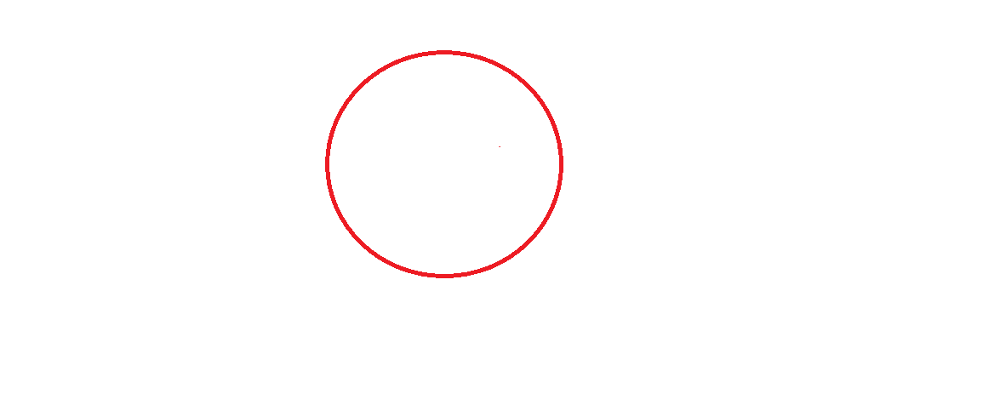
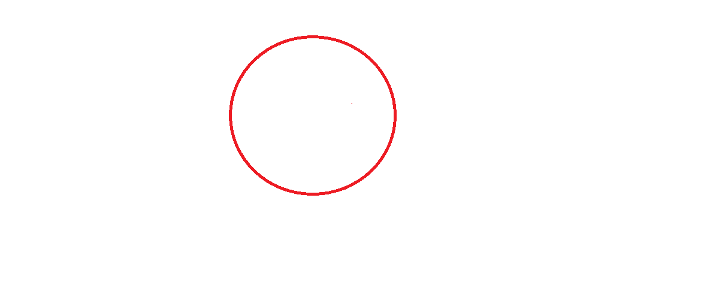

Kết thúc một năm học tập và làm việc vất vả, gia đình em đã có chuyến du lịch đến vùng cao nguyên đất đỏ Buôn Ma Thuột. Đầu tiên, em cùng mọi người đi tham quan thác “trinh nữ” thác “prây sáp”. Quanh đường đi cây cối rủ xuống những tảng đá lớn đủ hình thù. Nước từ trên đỉnh cao ào ào đổ xuống, tung trắng xóa mờ mờ như mưa bụi. Chúng em chụp hình rất đẹp. Em còn được đi thăm bản Đôn - ở đây có những cây cầu khỉ rập rềnh muốn té. Điều thú vị nhất là được ngồi trên lưng những chú voi khổng lồ đang đi lội suối nước chảy róc rách, trong veo. Chiều đến, mọi người cùng nhau quây quần ăn cơm lam, thơm lừng mùi lúa mới, bên đống lửa trại sáng rực cả một vùng núi đồi. Ngày hôm sau, em được đi thăm thác thủy điện. Dọc đường đi, em thấy hoa ban nở trắng cùng bông lau sậy, vươn cao trông rất đẹp. Cảnh sắc nơi đây thật đẹp biết bao.
Phạm Vũ Hùng
day la the in nghieng Day la the in dam đây là thẻ gạch chân
Kết thúc một năm học tập và làm việc vất vả, gia đình em đã có chuyến du lịch đến vùng cao nguyên đất đỏ Buôn Ma
Thuột. Đầu tiên, em cùng mọi người đi tham quan thác “trinh nữ” thác “prây sáp”. Quanh đường đi cây cối rủ xuống
những tảng đá lớn đủ hình thù. Nước từ trên đỉnh cao ào ào đổ xuống, tung trắng xóa mờ mờ như mưa bụi. Chúng em
chụp hình rất đẹp. Em còn được đi thăm bản Đôn - ở đây có những cây cầu khỉ rập rềnh muốn té. Điều thú vị nhất
là được ngồi trên lưng những chú voi khổng lồ đang đi lội suối nước chảy róc rách, trong veo. Chiều đến, mọi
người cùng nhau quây quần ăn cơm lam, thơm lừng mùi lúa mới, bên đống lửa trại sáng rực cả một vùng núi đồi.
Ngày hôm sau, em được đi thăm thác thủy điện. Dọc đường đi, em thấy hoa ban nở trắng cùng bông lau sậy, vươn cao
trông rất đẹp. Cảnh sắc nơi đây thật đẹp biết bao.
Đây là thẻ strong, mang ngữ nghĩa nhấn mạnh,có style giống thẻ in đậm nhưng ngữ nghĩa khác nhau
 
